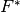
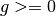
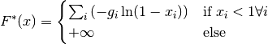

KullbackLeiblerConvexConj¶
-
class
odl.solvers.functional.default_functionals.KullbackLeiblerConvexConj(space, prior=None)[source]¶ Bases:
odl.solvers.functional.functional.FunctionalThe convex conjugate of Kullback-Leibler divergence functional.
See also
KullbackLeibler- convex conjugate functional
Notes
The functional  with prior  is given by:

Attributes: adjointAdjoint of this operator (abstract).
convex_conjThe convex conjugate functional of the conjugate KL-functional.
domainSet of objects on which this operator can be evaluated.
grad_lipschitzLipschitz constant for the gradient of the functional.
gradientGradient operator of the functional.
inverseReturn the operator inverse.
is_functionalTrueif this operator’s range is aField.is_linearTrueif this operator is linear.priorThe prior in convex conjugate Kullback-Leibler functional.
proximalReturn the
proximal factoryof the functional.rangeSet in which the result of an evaluation of this operator lies.
Methods
_call(x)Return the value in the point x.bregman(point, subgrad)Return the Bregman distance functional. derivative(point)Return the derivative operator in the given point. norm([estimate])Return the operator norm of this operator. translated(shift)Return a translation of the functional. -
__init__(space, prior=None)[source]¶ Initialize a new instance.
Parameters: - space :
DiscreteLporTensorSpace Domain of the functional.
- prior :
spaceelement-like, optional Depending on the context, the prior, target or data distribution. It is assumed to be nonnegative. Default: if None it is take as the one-element.
- space :